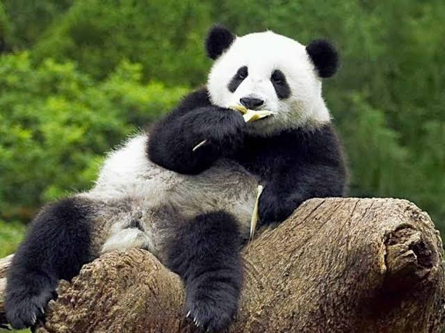

Panda: Convertido a nivel global en el máximo símbolo de la conservación de la naturaleza, este carismático oso de pelaje blanco y negro habita en los fríos y neblinosos bosques de bambú del centro de China. A pesar de pertenecer al orden de los carnívoros, ha evolucionado para llevar una dieta estrictamente herbívora, pasando hasta catorce horas al día masticando tallos y hojas de bambú gracias a un "falso pulgar" en sus muñecas que le permite sujetar las plantas con una destreza casi humana.